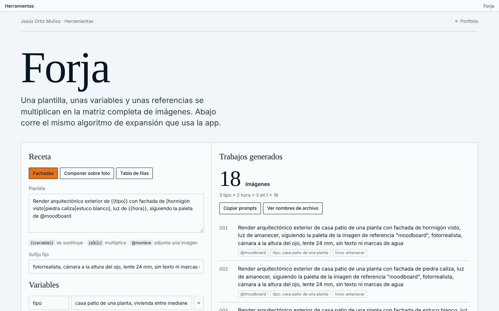
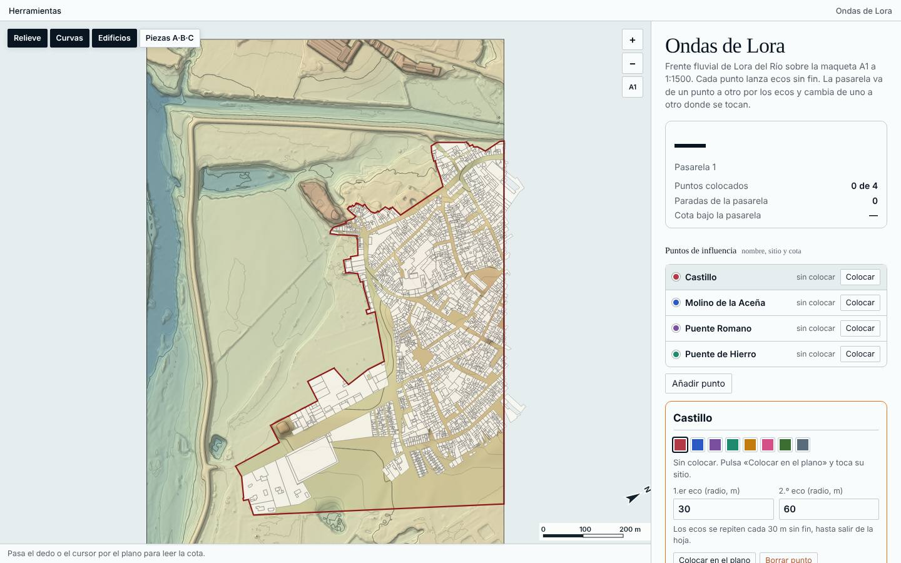
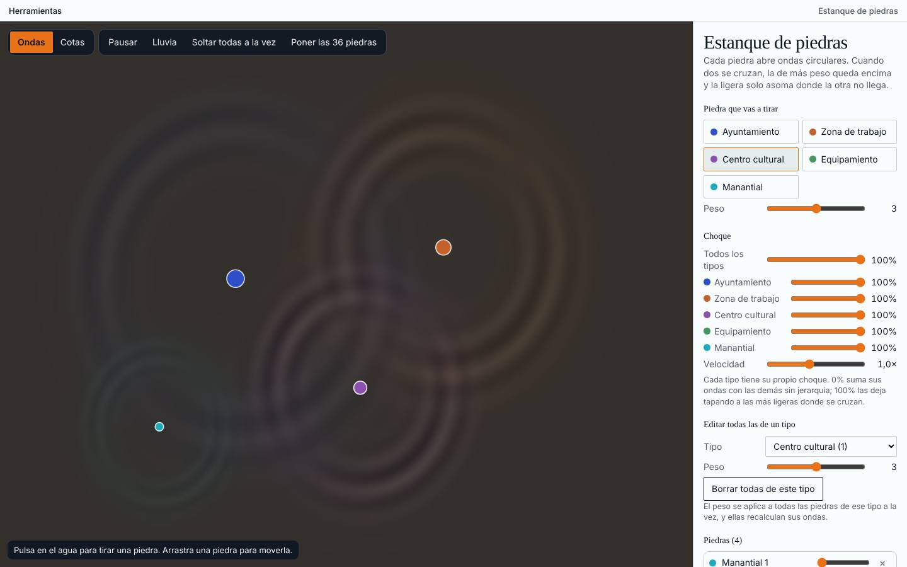

Jesús Ortiz Muñoz
Estudiante de Arquitectura, apasionado del diseño y de la tecnología como método de construcción e ideación. Universidad de Sevilla y NTUA de Atenas.

1536 px
Proyectos
Vivienda, equipamiento y espacio público, de Sevilla a Atenas.


Luz y material
Ver los renders
Herramientas propias
Programas que he escrito para dibujar, medir y automatizar. Se abren en el navegador.

Forja
Plantilla de imágenes con IA por lotes: una receta se multiplica en la matriz completa de prompts.

Ondas de Lora
Maqueta A1 a 1:1500 del frente fluvial, con ecos, pasarela y exportación a DXF.

Estanque de piedras
Cada piedra abre ondas; donde se cruzan manda la de más peso.
Busco un estudio de arquitectura, o una empresa de software para arquitectura, donde llevar una idea hasta el detalle construido.